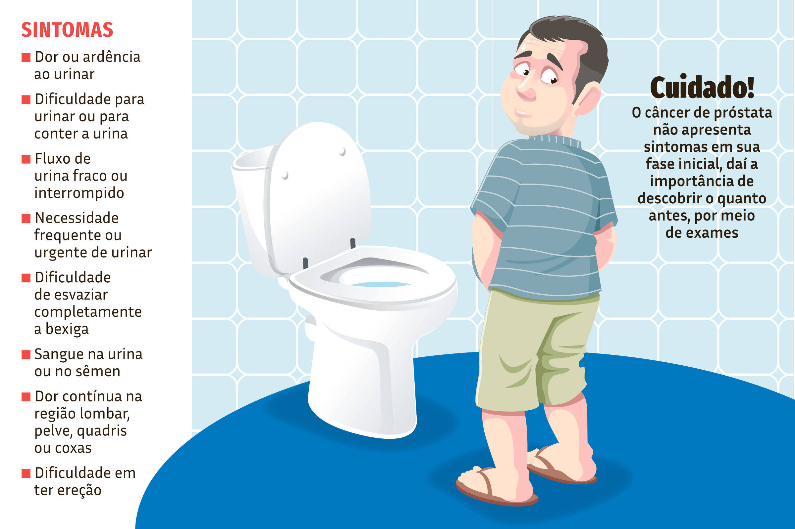

O câncer de próstata é o tipo de câncer mais incidente em homens. A próstata é uma glândula localizada abaixo da bexiga, à frente do reto. Ela produz até 70% do sêmen, sendo indispensável para a fertilidade.
No mundo, esse é o sexto tipo de câncer mais frequente e o segundo mais mortal entre os homens. Estima-se que 1 a cada 6 homens irão sofrer com o problema. A cada 7,6 minutos, um caso é diagnosticado e, a cada 40 minutos, há um óbito por câncer de próstata.
★Vontade urgente e repentina de urinar;
★Dificuldade e dor para urinar;
★Diminuição do jato da urina;
★Ter vontade de urinar mais frequentemente;
★Sensação de que a bexiga não esvaziou completamente ao urinar;
★Dificuldade para iniciar e parar a passagem da urina;
★Urina em gotas ou em jatos sucessivos;
★Necessidade de fazer força para manter o jato da urina;

★Dores na parte baixa das costas (lombalgia) ou na pélvis (abaixo dos testículos);
★Disfunção erétil;
★Dor ao ejacular;
★Sangue na urina ou no esperma;
★Fortes dores corporais e ósseas;
★Dor no testículo;
★Sangramento pela uretra;
★Insuficiência renal.
Importante para a detecção precoce do câncer de próstata, o exame de toque retal dura, no máximo, 2 minutos. Trata-se de um exame indolor que não deixa sequelas e não é tão desconfortável quando comparado com alguns exames ginecológicos.
Então, por que tantos homens temem esse exame? Simples: para palpar a próstata, o urologista precisa introduzir seu dedo no reto do paciente, ou seja, penetrar o ânus com o dedo.
O procedimento é feito utilizando luvas descartáveis novas e lubrificante para assegurar que não haja dor ou desconforto durante a inserção do dedo indicador no reto.
Frequentemente, após esse exame, o médico também pede o PSA, um exame de sangue que mede o antígeno prostático específico, substância que está alta quando há um tumor na próstata.
Mas é importante ressaltar que aproximadamente 20% dos diagnósticos são feitos apenas com o exame de toque retal, em que o médico percebe alterações e encaminha o paciente para a confirmação do quadro.
A melhor forma de tratar e obter a cura da doença é através do diagnóstico precoce, que só é possível se houver atenção à saúde.
Quando esses exames preventivos aumentam a suspeita de um câncer de próstata, pode ser solicitado ao paciente a realização de outros exames como biópsia, ultrassom transrretal e cintilografia óssea.